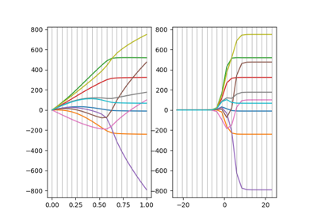

Example fracridge usage¶

Integrating FracRidge objects into sklearn pipelines
Integrating FracRidge objects into sklearn pipelines


Coefficient paths and cross-validation curves
Coefficient paths and cross-validation curves
- The code in this directory relies on functions contained in: